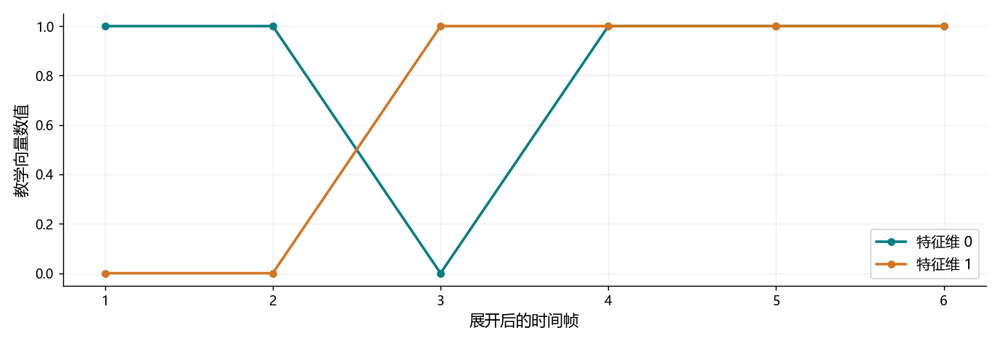

看图理解 · 跟着推演 · 对照真实结果
第14课 · 文字怎样变声音：时长、音高与声码器
跟着三个发音单元变成六帧，理解 TTS 每一段负责什么。
点播放开始；点右侧小节可跳到不懂的部分。进度保存在当前浏览器。
先看视频，再动手
不必先读完正文。跟着视频暂停预测，看到运行图时解释横轴、纵轴和曲线，再做下面的自测。完整图文保留作查阅；视频讲清本课核心算例，不把看完等同于掌握全部专题。
先修：理解数组轴、采样率、帧移与 Mel 特征。
- 画出中文 TTS 的模块化链路
- 手算时长展开与名义时间
- 区分内容正确、音色相似和自然度
跟着运行：注释代码、实际输出与结果图
下面代码在生成本站时实际执行。这里只是教学小实验，不是完整模型训练或业务设备测评。
import numpy as np
# 三个单元，每个由二维教学向量表示
units = np.array([[1., 0.], [0., 1.], [1., 1.]])
durations = np.array([2, 1, 3])
assert np.all(durations >= 0)
# 沿单元轴复制，不是复制特征维
expanded = np.repeat(units, durations, axis=0)
frame = np.arange(1, len(expanded) + 1)
feature0, feature1 = expanded[:, 0], expanded[:, 1]
hop, fs = 256, 16000
nominal_ms = len(expanded) * hop / fs * 1000
for row in expanded:
print(row.astype(int).tolist())
print("形状", expanded.shape)
print("名义时长", nominal_ms, "ms")
assert expanded.shape == (6, 2)
本次实际输出
[1, 0] [1, 0] [0, 1] [1, 1] [1, 1] [1, 1] 形状 (6, 2) 名义时长 96.0 ms

闭卷自测：三个单元时长为 [4,2,3]，帧移 10 ms，名义帧移总时长多少？
时长之和为 9 帧，9×10=90 ms；最终波形边界仍依赖系统对齐约定。
逐字讲稿 · 可定位回看
看到一句请打开空调，机器不只要知道文字内容，还要决定使用什么声音，以及哪里停顿、每个音持续多久、句子是请求还是命令。文字没有把这些全部写出来。
把说什么叫内容，把声音的身份特征叫音色，把节奏、重音、停顿和音高变化叫韵律。声音像同一个人，并不保证每个字读对；读对也不代表自然。
我们用三个教学发音单元，追踪它们怎样展开成六个声学时间帧。这个小例子不是完整合成器，但能把最容易迷糊的文字长度与声音长度关系讲清。
第一站处理文字写法。年份二零二六和金额两千零二十六元，数字相同，读法不同。规范化要结合语境，把书写形式转成适合发音的表示。
第二站处理读音，例如银行和行走的行不同。模型单元可能拆成声母、韵母、声调，不一定一个汉字对应一个 token，也不是查一次拼音字典就完成。
接下来安排时长、音高和声学表示，再由声码器生成高采样率波形。现代模型可能合并这些模块，但查错时仍可按这些功能问：到底是哪一步决定错了。
如果一个近似周期声源每五毫秒重复一次，先把五毫秒换成零点零零五秒，再取倒数，得到二百赫兹。这就是这个简单周期的基频。
基频与听到的音高密切相关，声道共振又影响频谱包络和元音特征。把细密谐波的间隔和较缓的包络形状分开看，就不会把二者混成同一个旋钮。
清辅音可能没有稳定周期，因此没有有意义的基频。处理基频标签要区分清浊音，不能把所有零都当作一种真实的低音，也不能仅用基频判断身份。
现在给三个单元起名 A、B、C。A 的向量是一和零，B 是零和一，C 是一和一。每个向量只有两个维度，便于画图，不是真实音素的物理测量。
指定时长分别二、一、三帧，就得到 A、A、B、C、C、C。输入是三行两列，输出是六行两列，改变的是时间长度，特征维度仍然是二。
如果把时长全部乘二，会得到十二帧。这说明时长控制如何拉长序列，但真实语速变化还涉及对齐、停顿和自然度，不是重复得越多就越好听。
每个帧移是二百五十六个样点，采样率每秒一万六千点，所以一个帧移是零点零一六秒，也就是十六毫秒。单位要先统一，别把毫秒直接当秒乘。
六个帧移对应九十六毫秒。这个例子故意很短，只为说明计算关系，并不是说三个真实发音单元通常只需要这么一点时间，更不是一段自然语音样本。
最终生成波形的样点数，还要检查分析窗、边界填充和声码器的对齐规则。这里说名义帧移时长，是为了避免把简化公式当作所有系统的精确边界。
第一组数组是三个单元，每行两个数字；第二组数组是每行需要重复多少次。先检查时长非负，因为负的复制次数没有声音长度上的合理含义。
核心是 repeat，指定 axis 等于零，沿单元所在的行方向展开。若错误写成一，就会复制特征列，形状变了，却没有实现我们希望的时间展开。
最后取两个特征列分别绘图，并用输出行数乘帧移除采样率算时间。这段代码只执行已知时长，不会预测时长，更没有训练一个自然语音合成模型。
横轴从第一帧到第六帧。第一条特征线在前两帧为一，第二条为零，对应 A。第三帧两条线交换，说明到了 B，而不是声音突然反相。
最后三帧两条特征都是一，对应 C 的向量一和一。打印出的矩阵正好是六行两列，名义时间九十六毫秒，图、形状和手算互相核对。
图中的一和零只是教学向量数值，不能解释为响度大小。这个限制很重要：看起来像声学图，不代表它就是声谱图，更不能评价生成语音是否自然。
假设声学表示每十六毫秒一帧，而波形每秒一万六千个样点，两者时间密度差很多。声码器要把稀疏时间表示变成细密波形，并补充合理的声音细节。
Mel 压缩了频率信息，通常也没有完整相位，所以这不是无损逆变换。随机初始化的声码器即使输出长度正确，也只说明接口能运行，不代表已经会说话。
真实系统总上采样倍率通常要和帧移匹配，还要处理边界。换声码器时先核对采样率、频带数、归一化和帧移，金属音不一定靠增加网络层数解决。
自回归像根据已生成的单元继续生成下一个，因此输出步骤之间有依赖。这里的单元可能是声学帧或音频 token，并不一定是一个文字。
扩散类方法通过若干步恢复带噪表示；流匹配学习随生成进度变化的速度场。这个生成进度不是录音时间轴，新手先分清两个时间，不急着背完整推导。
比较这些方法时，要分别测内容正确、音色相似、自然度和首块延迟。用识别器算错字率可以查漏字，但无法代替音色和自然度评价，也会受到识别器自身错误影响。
现在把时长改成四、二、三，帧移改成十毫秒。先在纸上加出九帧，再乘十，得到九十毫秒。不是三个单元乘十，时长数组每个数字都要计入。
你的实习练习可以固定一套中文困难文本，包括年份、金额、多音字、缩写、长句和停顿。只改一个前端规则，保留修好和变坏的音频，再说明原因。
声音参考应有授权，不能用未授权克隆充作品集。视频可以帮你读懂链路，但请亲手改一次时长数组，解释形状与图的改变，才算完成这一课的动手验收。
适用边界与参考正文
实际代码是二维教学向量的时长展开，不是训练好的 TTS，不输出自然语音，不证明音色或自然度表现。
图、公式、代码结果均由本站制作；旁白是本地中文语音合成，不是教师真人录音，也不是 NotebookLM 生成。没有向 Google 上传项目材料。